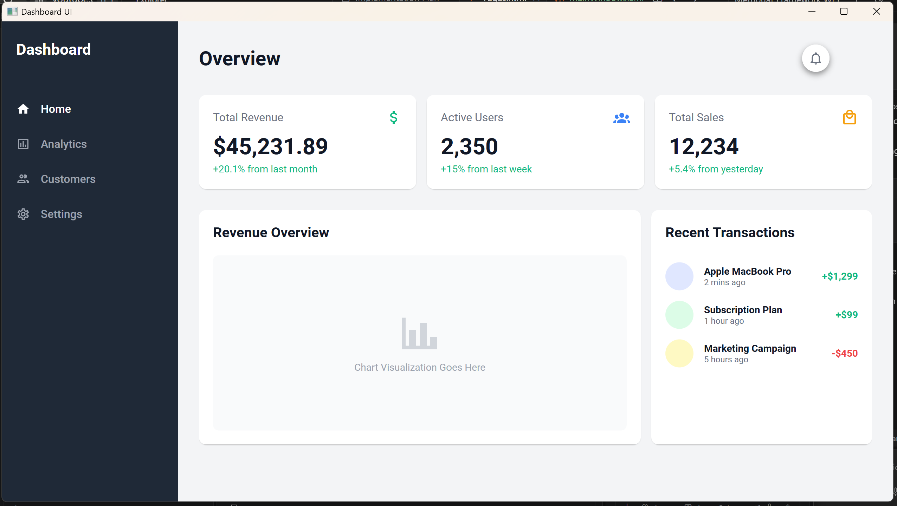

Membuat aplikasi desktop Dashboard UI menggunakan Windows Presentation Foundation (WPF) dengan MaterialDesignThemes.
Pada pertemuan 5 ini, kita telah membangun sebuah aplikasi desktop Windows Presentation Foundation (WPF) berbasis .NET. Fokus utama dari proyek ini adalah merancang antarmuka pengguna (UI) modern yang berupa sebuah Dashboard. Untuk mencapai desain yang bersih, minimalis, dan kekinian, proyek ini mengintegrasikan pustaka desain MaterialDesignThemes.
Berikut adalah beberapa implementasi kunci di dalam aplikasi:
<Application.Resources>
<ResourceDictionary>
<ResourceDictionary.MergedDictionaries>
<materialDesign:BundledTheme BaseTheme="Light" PrimaryColor="DeepPurple" SecondaryColor="Lime" />
<ResourceDictionary Source="pack://application:,,,/MaterialDesignThemes.Wpf;component/Themes/MaterialDesign3.Defaults.xaml" />
</ResourceDictionary.MergedDictionaries>
</ResourceDictionary>
</Application.Resources>
File ini bertindak sebagai pusat sumber daya aplikasi. Di sini kita mendeklarasikan penggunaan Material Design sehingga dapat diakses oleh semua jendela/komponen aplikasi. Kita menggunakan BundledTheme dengan tema dasar terang (Light) dan warna aksen DeepPurple & Lime.

<Grid>
<Grid.ColumnDefinitions>
<ColumnDefinition Width="250"/>
<ColumnDefinition Width="*"/>
</Grid.ColumnDefinitions>
<!-- Sidebar -->
<Border Grid.Column="0" Background="#1F2937">
...
</Border>
</Grid>
Struktur layout dibagi menggunakan sistem Grid dengan dua kolom utama. Kolom pertama (kiri) digunakan sebagai Sidebar yang berisi menu navigasi vertikal menggunakan gaya flat button dari Material Design.
<materialDesign:Card Grid.Column="0" Padding="20" UniformCornerRadius="10">
<StackPanel>
<Grid>
...
<TextBlock Text="Total Revenue" Foreground="#6B7280" FontSize="16" VerticalAlignment="Center"/>
<materialDesign:PackIcon Grid.Column="1" Kind="CurrencyUsd" Foreground="#10B981" Width="24" Height="24"/>
</Grid>
<TextBlock Text="$45,231.89" FontSize="32" FontWeight="Bold" Foreground="#111827" Margin="0,10,0,0"/>
<TextBlock Text="+20.1% from last month" Foreground="#10B981" FontSize="14" Margin="0,5,0,0"/>
</StackPanel>
</materialDesign:Card>
Area konten utama menggunakan materialDesign:Card untuk menampilkan widget ringkasan secara elegan. Ikon disediakan oleh materialDesign:PackIcon yang memungkinkan penggunaan ribuan ikon vektor bawaan, seperti CurrencyUsd dan AccountGroup.
Aplikasi ini dapat dijalankan melalui terminal dengan mengarahkan ke folder pertemuan5 lalu menjalankan:
cd pertemuan5
dotnet run